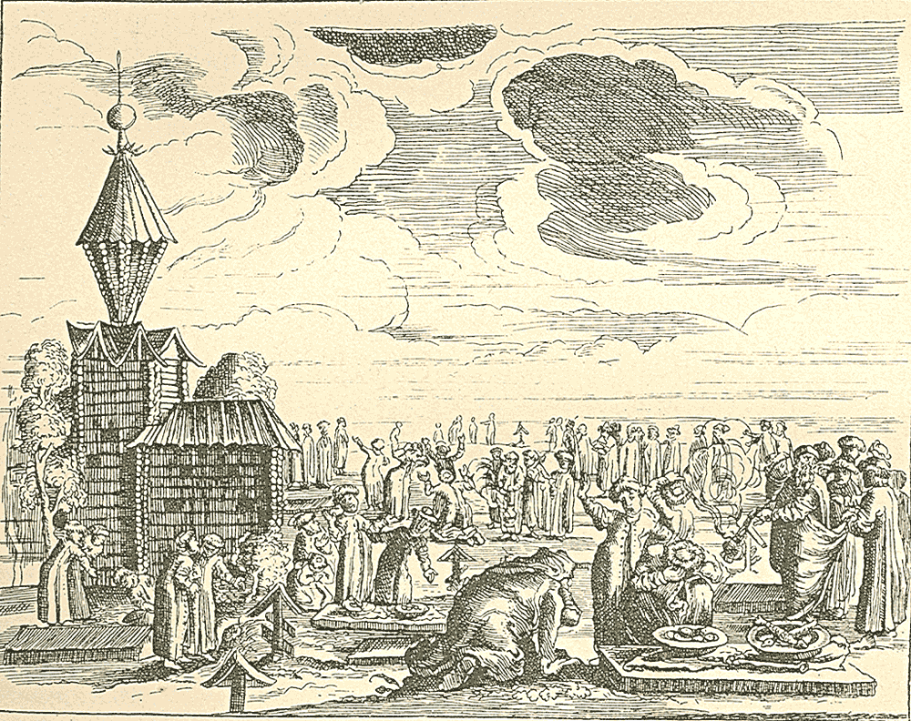

ТОМ I · ЛИСТ C · 03 / 09
ОБРЯД
Третий, девятый, сороковой дни
Самый уверенно повторяемый «русский похоронный обычай» оказывается и самым часто неверно описываемым: поминовение на третий, девятый и сороковой день — прежде литургическая схема, а уже потом народная.
Литургические источники XVII–XIX вв.; практика зафиксирована в XIX–XXI вв. · Россия; православные приходы · Православное христианство; народная переработка

C / 01
Устройство сорока дней
Поминовение усопшего на третий, девятый и сороковой день после смерти изложено в православных руководствах, и основания там богословские, а не календарные. «Новая скрижаль» архиепископа Нижегородского Вениамина (1739–1811) в главе общих примечаний ко всем погребениям, § 2, приводит не одно объяснение. Она ссылается на Неофита Родийского: третий день означает три дня до воскресения Христа, девятый — прошение причислить умершего к девяти чинам ангелов, сороковой повторяет сорок дней, когда народ Израилев оплакивал Моисея. Она ссылается на Симеона Солунского, для которого сороковой день напоминает о Вознесении, случившемся на сороковой день после Воскресения. И добавляет собственное рассуждение: сорок — число, которое Писание освящает снова и снова, как пост Моисея, путь Илии и сорок дней Христа с апостолами после Воскресения.
В том же параграфе одно объяснение отведено в сторону. Некоторые говорят, сообщает книга, что тело на третий день меняет вид, на девятый истлевает, а к сороковому истлевает и само сердце, но эти причины «не всегда согласны с опытами». Молитвы — о прощении грехов и о месте души среди святых и ангелов. Объяснений, записанных в деревнях, — что душа три дня посещает дом или что на девятый её испытывают, — в руководстве нет. О сороковом дне Зеленин (1927, §§ 132, 136) записал, что до него душа считалась ещё не ушедшей, а в этот день её «провожали».

| Момент | Документировано в руководстве | Записано в деревнях (Зеленин 1927) | Достоверность |
|---|---|---|---|
| Третий день | Три дня Христа во гробе перед Воскресением (Неофит Родосский); другие авторы связывают с Троицей и тремя добродетелями | День похорон. Омовение рук над порогом; обед открывается кутьей; первая ложка/стакан ставятся душе на окно (Кремлева 1999, с. 527–528; Зеленин § 136) | документировано / документировано |
| Девятый день | Моление о сопричтении усопшего к девяти чинам ангельским | Семейная трапеза для близких и обмывальщиц; верование о прохождении душой мытарств; свежая вода и блин на окне (Кремлева 1999, с. 529) | документировано / документировано |
| Сороковой день | Оплакивание Моисея (Неофит); Вознесение (Симеон Солунский); сорок в Писании | Проводы души; снятие холста с окна, разбор постели/чучела умершего; поминальный стол с кутьей, лесенками, выход на межу (Кремлева 1999, с. 529–530; Зеленин §§ 132, 136) | документировано / документировано |
| Годовщина | Ежегодная память родных, свидетельствующая о том, что усопшие живут с ними душой (Симеон) | Переход умершего в разряд общих предков («родителей»); панихида, посещение могилы, семейный обед (Кремлева 1999, с. 530–531) | документировано / документировано |
| Радоница | Привязана к Пасхе: по нынешнему правилу Церкви — вторник второй недели после неё | Зеленин называет четверг второй недели; крашеное яйцо целуют и закапывают в могильный холмик или кладут на него (§ 136) | средняя / документировано |

C / 04
Против истории о пережитках
Наука XIX — начала XX века часто читала русскую похоронную практику как пережиток дохристианской религии, поверх которой наложена Церковь. Зеленин (1927, § 154) пишет, что блины на масленицу «неопровержимо» свидетельствуют, что праздник когда-то был посвящён поминовению умерших, — это чтение именно такого рода. Исследование А. К. Байбурина о ритуале в традиционной культуре, как его пересказывала прежняя редакция и как оно не перечитано в этой, рассматривает ритуал как систему знаков с собственной внутренней логикой, а не как окаменелость прежнего верования, и считает, что то, что обряд «первоначально значил», по сохранившимся свидетельствам обычно не восстановить.
Поэтому атлас помечает утверждения о происхождении как интерпретации. Сорокадневный цикл документирован как христианский. Понимали ли некоторые семьи его ещё и как более древний календарь — вопрос, который использованные здесь источники решить не могут.
C / 05
Кто делает работу: один вологодский случай
Статья Елены Самойловой о фигурах в северорусской похоронной обрядности сообщает для деревень Нюксенского района Вологодской области о «заместителе покойного», который после похорон делался из одежды умершего и стоял в красном углу дома до сорокового дня. Её основа — полевые записи 2006–2009 годов и записи О. Коншина 1996 года, оригиналы которых сгорели вместе с районным центром в 2007 году и частично восстановлены по его памяти. Два рассказа описывают одну и ту же конструкцию: свёрнутая исподняя рубаха, обмотанная платком, без узлов, с лицом, закрытым углом платка. Обе фигуры делали для женщин, умерших в старости. В одном случае, записанном в 1996 году, подруга умершей бабушки велела родным сделать чучело из её одежды; в другом, записанном в 2009 году, соседка сказала посадить куклу в угол до сорокового дня и вынести её, «как поминать станут». Закрытое лицо информантка объяснила тем, что фигура «не живая».
Самойлова читает это так. В обоих случаях обычай начинал человек, который его знает, а не ближайшая родня, и она видит в этом признак того, что практика перешла к носителям ритуального знания. В качестве рабочей гипотезы она предполагает, что фигуру делали лишь для уважаемого человека, умершего от старости. Вместе с тем в районе перед фигурой ставили еду и воду, и информантка говорит, что тарелка стояла «до сорокового дня». Матерчатый двойник жены, сделанный в 2010 году одним крестьянином, — отдельный случай, который она оставляет открытым: возрождённый обычай или выдумка. Её свидетельств немного: три случая 1910–1940 годов от четырёх названных информантов и более поздние. Статья прочитана здесь по PDF владельца: с. 251–255 и 265–268 внимательно, остальное просмотрено поиском, но не прочитано подряд.

C / 07
Причитание: спонтанное и отрепетированное
Причитание — та часть обряда, которую чаще всего описывают как чистое чувство. Барсов, издавая в 1872 году, называл причитания непосредственными излияниями дум и ощущений, вызванных потерей. Елена Югай, работая с интервью из нескольких районов Вологодской области с женщинами в основном 1920–1940-х годов рождения, находит в их рассказах два типа причитальщиц: оплачиваемую специалистку и скорбящую родственницу, которая начинает причитать, не собираясь этого делать. Рассказы строятся вокруг второй. Те же женщины описывают и подготовку: упражнялись в одиночку в глухих местах, внимательно слушали опытных причитальщиц, иногда учились у старухи за плату. Югай пишет, что эту подготовку нужно было скрывать, потому что видимость спонтанности и личной вовлечённости входила в само исполнение, а наставницей называют само горе.
О функции она читает причитания как ритуальные тексты с мелодией, имитирующей плач, обращённые к умершему. На похоронах они помогают перевести покойного в статус предка, на поминках обеспечивают защиту умерших родственников, а также ограничивают горе вдов и сирот. Это интерпретация одной исследовательницы, только по вологодскому материалу, и она направлена и против романтического прочтения Барсова, и против собственного рассказа женщин. Атлас сохраняет оба: что женщины говорят о том, что делают, и что, по мнению исследовательницы, делает обряд.
C / 08
Что руководство говорит о причитании
Та же «Новая скрижаль» (гл. XX, § 15, «Употребление надгробного плача») к причитанию не благосклонна. Она говорит, что издревле было замечено: женщины, терзаясь неразумным отчаянием, в разодранных одеждах и с распущенными волосами, кричащие при смерти близких, не смягчают боль, а умножают её и побуждают других к такому же плачу и восхвалению умерших. Она напоминает, что Карфагенский собор запретил епископам прибавлять к молитвам, установленным соборами, свои печальные песнопения и похвалы, а чтецам — произносить «свадебные восклицания» вместо церковного пения. Тем не менее Церковь допустила некоторые собственные плачевные песнопения, говорит руководство, чтобы обратить внимание к смерти и будущей жизни, и называет тропарь в конце чина, который как бы от уст усопшего зовёт друзей и сродников к плачу.
Место говорит о плаче женщин древности вообще и о клириках, которые сочиняли своё; русских крестьянских причитаний оно не называет, и атлас не утверждает, что оно было нацелено на них. Оно показывает, что руководство, ходившее в России с 1803 года, считает допустимым установленный церковный плач и ошибкой — импровизированный.

Текст
Мороз, Красный нос (отрывок)
Оригинал
Отрывок Строки 260–275: обряжание Прокла. Следующий за ними похоронный плач — литературное сочинение Некрасова, а не запись фольклора.
«Мороз, Красный нос» (1863–64) — поэма о смерти крестьянина Прокла и горе его вдовы Дарьи. В отрывке описано обряжание тела: тишина в доме, свеча в головах, широкая холщовая рубаха, новые липовые лапти, мозолистые руки. Некрасов опирался на этнографический материал, и современники читали поэму как картину крестьянской жизни, но это не запись обряда.
Похоронный плач, который следует за этим отрывком, — литературное сочинение Некрасова. Атлас не выдаёт его за народный плач; записанные плачи — в листе G. Отрывок печатается как литературный образ обряда, а не как свидетельство о том, что говорили и делали.
- холщовая рубаха
- Рубаха из грубого холста; умершего одевают в чистое простое.
- лапти
- Лапти из липового лыка; новая пара подчёркивает серьёзность приготовления.
- свеча в головах
- Свеча в изголовье; обычный элемент православного обряжания.
Источник Н. А. Некрасов, «Мороз, Красный нос» (1863–64), ч. I, гл. VIII, строки 260–275. · открыть источник
Права Общественное достояние. Некрасов умер в 1877 г.; поэма напечатана в 1863–64 гг. Общественное достояние в России и США. Текст следует транскрипции Викитеки по «Полному собранию сочинений и писем» (1981–2000), т. 4, ч. I, гл. VIII, строки 260–275.
Аппарат источники · связанные листы · термины
Источники этого листа
- skrizhal Вениамин (Краснопевков-Румовский), архиепископ — Новая скрижаль (1803 (по современному интернет-изданию))
- baiburin1993 Байбурин, Альберт Кашфуллович — Ритуал в традиционной культуре (1993)
- shevzov2003 Shevzov, Vera — Russian Orthodoxy on the Eve of Revolution (2003)
- barsov1872 Барсов, Елпидифор Васильевич — Причитания Северного края (1872–1886)
- azbyka-radonitsa2024 Azbyka.ru news desk (unsigned) — В России православные отмечают Радоницу (2024)
- yugai2018 Югай Е. Ф. — Актуализируя причитания: взгляд причитальщицы на импровизацию в конце ХХ–ХХI вв. (2018)
- zelenin1927 Зеленин, Д. К. — Восточнославянская этнография (перевод книги «Russische (Ostslavische) Volkskunde», Берлин–Лейпциг, 1927, пер. К. Д. Цивиной) (1991 (German original 1927))
- samoilova-figures Самойлова, Елена — Антропоморфные фигуры в контексте похоронно-поминальной обрядности северорусской деревни (n.d. (volume year not shown on the pages; the PDF was made in 2011))
- nekrasov1863 Nekrasov, Nikolai Alekseevich — Moroz, Krasnyi nos (1863–1864)
- kremleva1999 Кремлева, Ирина А. — Похоронно-поминальные обычаи и обряды (1999)
Ссылки, даты обращения и ограничения — в списке источников.